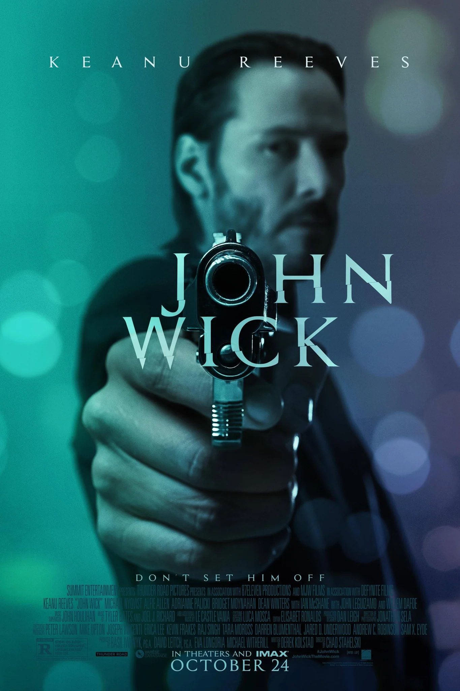
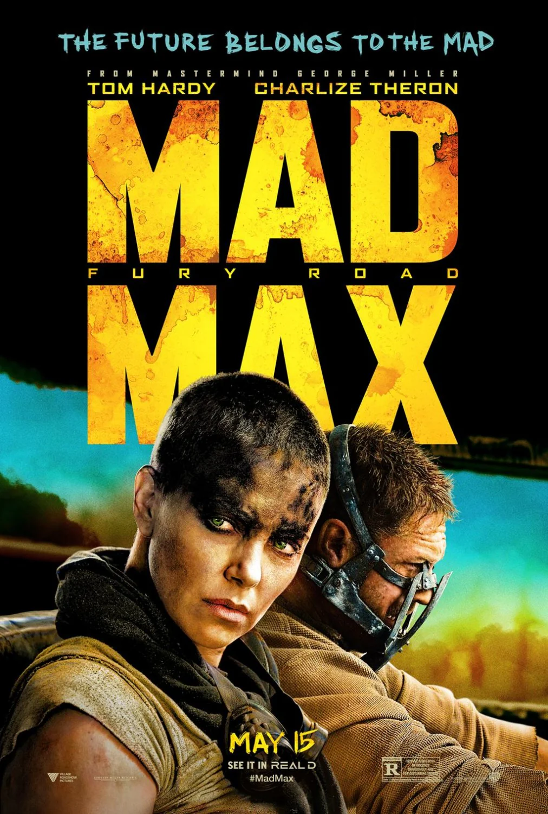
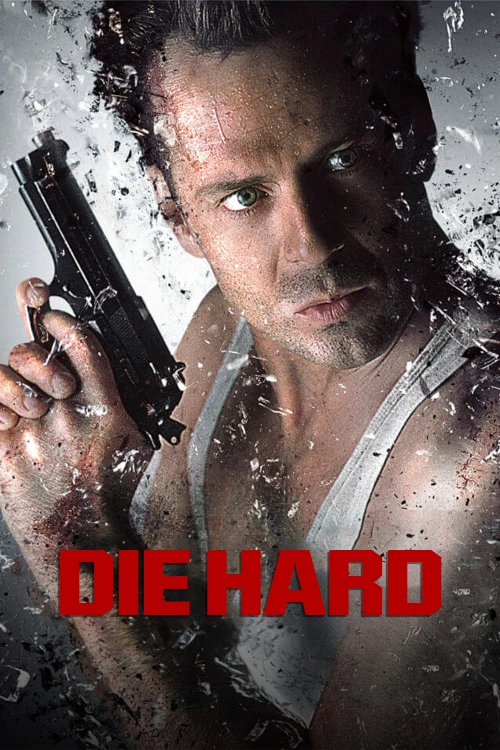
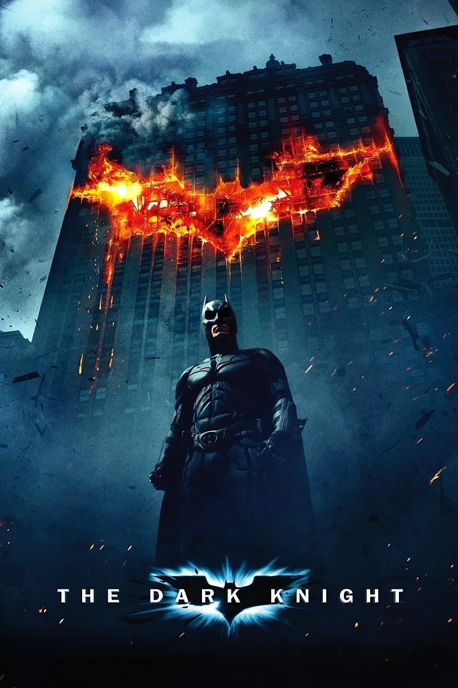
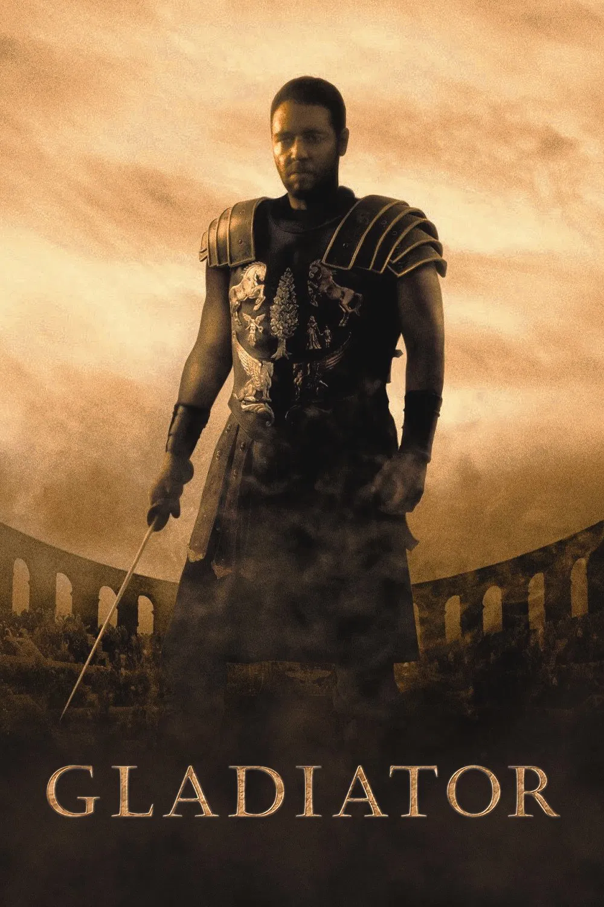

¿Sabías que…?
la primera película en la historia duró menos de 1 minuto? Se llama La salida de los obreros de la fábrica (1895), fue hecha por los hermanos Lumière en Francia, y mostraba simplemente a trabajadores saliendo de una fábrica. ¡Así comenzó todo el cine que conocemos hoy!

VIDEO
curiosidades🎬
El perro se llamaba Daisy, y era un beagle real que se robó el corazón del equipo de rodaje.
Keanu Reeves disparó más de 1,000 balas por día durante su entrenamiento previo al rodaje.
Los directores eran exdobles de acción de Keanu Reeves en Matrix (Chad Stahelski y David Leitch).
El presupuesto fue de solo 20 millones de dólares, pero recaudó más de 86 millones en todo el mundo.
Keanu Reeves en una saga de acción y estilo visual muy marcado.
Mad Max: Fury Road (2015)

VIDEO
curiosidades🎬
Se grabó casi sin CGI: La mayoría de las explosiones y acrobacias son reales, con vehículos y especialistas auténticos.
Se filmó en Namibia, porque en Australia llovió demasiado y el desierto se llenó de flores.
Charlize Theron (Furiosa) y Tom Hardy (Max) tuvieron tensiones reales durante el rodaje por las duras condiciones.
Ganó 6 Premios Óscar, casi todos en categorías técnicas como edición, sonido y vestuario.
Acción non-stop en un mundo postapocalíptico.

VIDEO
curiosidades🎬
El edificio Nakatomi Plaza es en realidad la sede de 20th Century Fox en Los Ángeles.
Bruce Willis no era la primera opción: se ofreció el papel a actores como Arnold Schwarzenegger y Sylvester Stallone, pero lo rechazaron.
Las explosiones eran reales, y algunas escenas se filmaron en pisos aún en construcción del edificio.
Técnicamente es una película navideña, ya que toda la historia ocurre en una fiesta de Navidad.
Clásico de acción con Bruce Willis.

VIDEO
curiosidades🎬
Heath Ledger diseñó parte del maquillaje del Joker él mismo, usando pintura de payaso y un espejo para hacerlo más caótico.
El Batpod (la moto) funcionaba de verdad, y solo unos pocos especialistas lograron manejarla sin caerse.
La explosión del hospital fue real, y el fallo momentáneo del detonador fue una improvisación de Ledger que quedó perfecta.
Heath Ledger ganó el Óscar póstumo a Mejor Actor de Reparto por su interpretación del Joker.
Acción y drama en una gran película de superhéroes.

VIDEO
curiosidades🎬
Algunos tigres usados en la arena eran reales, pero se controlaban con medidas de seguridad extremas para proteger a Russell Crowe.
Russell Crowe improvisó la famosa frase “¿Are you not entertained?” durante una escena del coliseo.
El actor Oliver Reed (Proximo) murió antes de terminar el rodaje, y sus últimas escenas se completaron con CGI.
El Coliseo fue recreado digitalmente a partir de un set real de solo ⅓ de su tamaño original.
Épica de acción ambientada en la antigua Roma.
Subir